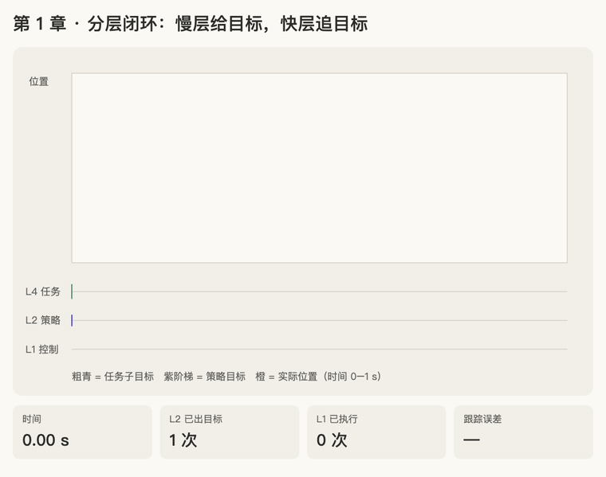
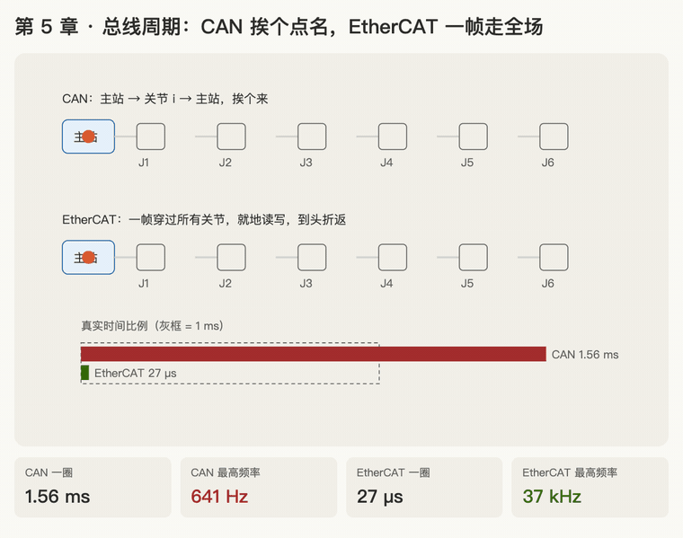

机器人软硬件架构 · 讲义目录
10 章 · 10 个动画（GIF + 可交互页面）· 40 张复习卡片（A01–A40，本书 10 章对应 A01–A30）· 覆盖 Lynch & Park《Modern Robotics》第 2、4–6 章与 §8.9、第 11 章里和整机架构有关的部分，其余（传感器、总线、ROS 2、自主栈、数据、安全）为自编
这本书讲什么
从"一台机器人 = 一组快慢嵌套的闭环"这张总图讲起，按"骨肉 → 神经 → 反射 → 思考 → 机器之外"的顺序，一层层拆开：关节角怎么变成手的位置、电机和减速器怎么选、传感器怎么标定和对时、几块电脑和几条总线怎么接、关节怎么"听话"、ROS 2 怎么把模块串起来、VLA 和双系统放在哪一层、仿真和数据怎么转成飞轮，最后讲安全分层，并拆五类整机。
- 适合谁：学过一点 AI（比如 VLA、强化学习），想知道"模型下面那台机器到底长什么样"的人。需要的数学（三角函数、矩阵、雅可比、二阶系统、期望）在用到的那一章现场补。
- 读完能做什么：拿到一台机器人（或一份方案），能画出它的分层闭环图，说出每层多快、跑在哪块硬件上、层间传什么；能用第 10 章的九步清单从零做一遍选型；接着去读 VLA 讲义 和 ROS 2 专题时知道每个模块坐在哪。
- 怎么读：按章顺序读。每章先看讲解和动画，再自己做练习，最后用复习卡片隔几天考自己。
讲解的特点
- 一次一小步：每个概念按"白话类比 → 公式（每个符号说清楚怎么读）→ 小数字亲手算一遍"讲：端水走路讲分层、自行车变速讲减速比、星光讲相机延迟、开门讲阻抗控制。
- 每章一个动画：关键原理做成可交互页面，▶ 播放、→ 单步、↺ 从头开始，有滑块的可以拖动参数看结果怎么变（减速比、延迟、刚度、丢包率、随机化范围）；GIF 版直接嵌在正文里。
- 对照原文：每章开头的"对应原文"标了本地文本的行号（Modern Robotics 的
materials/text/、ROS 2 官方文档、VLA 论文文本），原文没讲的部分写明去哪查。 - 保留真实的学习过程：练习与作答记录会记下学习时的原话、对错和点评；答错、卡住的地方变成复习卡片。（目前 30 道练习还没作答。）
- 术语不设门槛：缩写第一次出现就给英文全称并逐词解释（如 QDD = Quasi-Direct Drive：准 / 直驱），全书缩写见 缩写与术语表。
- 每章都有代码对照：附录最后一节用 Python + NumPy 把本章的数算一遍（减速比、CAN 一圈多久、阻抗撞墙的力、QoS 队列、反应时间、停止距离……），配测试核对和讲义一致，顺带讲代码里才看得到的坑（角度要换弧度、位和字节差 8 倍、浮点误差让
ceil多算一圈……）；只算讲过的例子，不提前给练习答案。每章还配了一个 Jupyter notebook（solutions/chapter-code/notebooks/），讲解和代码放在一起，一格一格边读边跑。 - 每章收尾有口诀：几句话记住一章，全部口诀汇总在本页末尾。
示例动画
 第 1 章 · 分层闭环 慢层给目标、快层追目标，拖滑块看策略频率变低会怎样 讲义 · ▶ 交互 |
 第 2 章 · 两连杆 IK 手追目标，跑出工作空间时手臂伸直、det J 趋近 0 讲义 · ▶ 交互 |
 第 3 章 · 减速比 力矩乘 N、速度除 N，反射惯量乘 N² 讲义 · ▶ 交互 |
 第 5 章 · 总线周期 CAN 挨个点名，EtherCAT 一帧走全场 讲义 · ▶ 交互 |
 第 6 章 · 阻抗控制 硬弹簧和软弹簧撞墙，稳态力 ≈ K × 陷入深度 讲义 · ▶ 交互 |
 第 10 章 · 安全降级 正常 → 降速 → SS1 → STO，一层层兜底 讲义 · ▶ 交互 |
全部动画见 动画目录（另有运控、规划细化笔记的 4 个动画）。
其他入口
- 一页总图：../00-overview.md（分层闭环、硬件栈表、软件栈表、五类整机对照）
- 复习卡片：../review.md（编号以 A 开头，按间隔规则复习）
- 细化笔记：研发流程 · 运控细化 · 规划细化
- 学习计划：../study-plan.md
- 代码对照：../../solutions/chapter-code/
- 缩写与术语表：appendix-glossary.md
全流程总览
目标：机器人听到"把杯子递给我"，从一句话一路变成电机里的电流，再把手稳稳伸出去。
"把杯子递给我"
│ L4 任务规划：LLM / VLM 拆子任务（0.1–1 Hz） 第 1、8 章
▼
[找杯子, 抓杯子, 转身, 递出]
│ L3 感知：相机看到杯子在哪（30 Hz）；先标定、再对时 第 4 章
│ L2 策略：VLA / 双系统出一段 action chunk（5–50 Hz） 第 8 章
▼
未来 N 步的关节角 / 末端位姿
│ ROS 2 话题、QoS、tf2 送到实时控制器 第 7 章
│ 插补：慢目标补成每毫秒一个点 第 1 章
▼
L1 关节 / 全身控制：阻抗、WBC、PD（200 Hz–1 kHz） 第 6 章
│ 用雅可比把手的力换成关节力矩 τ = Jᵀ F 第 2、6 章
│ EtherCAT / CAN-FD 每周期一帧，发给每个关节 第 5 章
▼
L0 电机驱动：FOC 电流环（10–40 kHz）→ 电机 → 减速器 → 连杆 第 3、6 章
│
└── 旁边一直开着：看门狗、限幅、碰撞检测、急停 → STO 第 5、10 章
机器之外：仿真训练、遥操作采集、日志回流、OTA 升级（数据飞轮） 第 9 章
| 步 | 做什么 | 为什么这样做 |
|---|---|---|
| 分层 | 上层慢而粗、下层快而简单，频率每层约快 10 倍 | 大模型算不过来也不准时；越往下出错代价越大 |
| 运动学 | FK 算手在哪，IK 反推角度，雅可比同时管速度和力 | 上层说的是"手去哪"，下层只认关节 |
| 执行器 | 电机 + 减速器，按减速比在力矩、速度、惯量间取舍 | 电机天生快而弱，关节要慢而强 |
| 传感器 | 本体 + 外部，标定位置、统一时间戳 | 不知道在哪、什么时候的数据等于错的数据 |
| 电气计算 | 主控 / 实时 / 驱动三块板，EtherCAT 点名，急停走硬线 | 各自的实时要求差几个数量级 |
| 底层控制 | 级联 PID、FOC、阻抗、WBC / MPC / RL | 让关节准、让接触安全、让整机不倒 |
| 中间件 | ROS 2 节点 + QoS + tf2 + ros2_control | 模块可替换、可录制回放，仿真真机一键切换 |
| 自主栈 | 模块化 / 端到端 VLA / 双系统 | 在可解释、泛化和反应速度之间取舍 |
| 机器之外 | 仿真、域随机化、遥操作、数据格式、部署 | 数据飞轮让机器人越用越好 |
| 安全 | 本质安全 → 硬件回路 → 安全控制器 → 软件监控 → 策略 | AI 只能在最上层，永远不是最后一道保险 |
目录
每章都配一个动画：GIF 在讲义正文里直接播放，▶ 交互是可以点按钮、拖滑块的页面（本地看需要起服务，见 动画目录）。每章附录最后有代码对照，代码和测试在 solutions/chapter-code/。
| 章 | 主题 | 一句话精要 | 动画 | 卡片 | 状态 |
|---|---|---|---|---|---|
| 1 | 总图：一台机器人 = 一组快慢嵌套的闭环 | 大脑给目标、脊髓追目标；每层软件坐在一块硬件上 | GIF · ▶ 交互 | A01–A03 | 已写，待讲 |
| 2 | 本体与运动学：FK / IK / 雅可比 / 奇异 | 正解一路加角度，逆解要迭代；雅可比管速度也管力 | GIF · ▶ 交互 | A04–A06 | 已写，待讲 |
| 3 | 执行器：电机 + 减速器，减速比的四个后果 | 力矩乘 N、速度除 N、惯量乘 N² | GIF · ▶ 交互 | A07–A09 | 已写，待讲 |
| 4 | 传感器：本体 / 外部、标定、时间同步、融合 | 先标定、再对时；延迟误差 = v · Δt | GIF · ▶ 交互 | A10–A12 | 已写，待讲 |
| 5 | 电气与计算：主控 / 实时 / 驱动、EtherCAT vs CAN、电源、急停 | CAN 挨个点名，EtherCAT 一帧走全场；急停走硬线 | GIF · ▶ 交互 | A13–A15 | 已写，待讲 |
| 6 | 底层控制：级联 PID、FOC、阻抗、WBC / MPC / RL | 内环快外环慢，电流即力矩；阻抗让手像弹簧 | GIF · ▶ 交互 | A16–A18 | 已写，待讲 |
| 7 | 软件框架：ROS 2、QoS、tf2、ros2_control、实时 | 差网络里要新鲜不要完整；实时要自己隔出来 | GIF · ▶ 交互 | A19–A21 | 已写，待讲 |
| 8 | 自主栈：模块化 vs 端到端 VLA vs 双系统 | 反应快慢看最快那条闭环 | GIF · ▶ 交互 | A22–A24 | 已写，待讲 |
| 9 | 仿真、数据与部署闭环：sim2real、遥操作、数据格式、OTA | 仿真不准就让它随机地不准；数据要记相机在哪、什么时候 | GIF · ▶ 交互 | A25–A27 | 已写，待讲 |
| 10 | 安全、可靠性与五类整机案例 | 越往下越不靠软件；能减速就别断电 | GIF · ▶ 交互 | A28–A30 | 已写，待讲 |
| 附录 | 缩写与术语表 | 全书缩写按领域分表 | — | — | 完成 |


后续大纲
10 章已经覆盖整机的每一层。下一步不是加章，而是：
| 做什么 | 去哪 |
|---|---|
| 做完 30 道练习，补作答记录、点评和卡片 | 本讲义 |
| 动手里程碑 A-M1–A-M5（7 DoF 臂的 IK、IMU 融合、MuJoCo 阻抗推墙、ROS 2、仿真与数据） | study-plan |
| 运控、规划往深里走 | 运控细化、规划细化 |
| 第 7 章动手 | ros2 专题 |
| 第 8 章的 VLA 细节 | vla-deep-dive |
口诀汇总
- 第 1 章：大脑给目标，脊髓追目标；越往下越快、越简单、越不能迟到。每一层软件都坐在一块硬件上，层和层之间是一条总线加一种消息。
- 第 2 章：正解一路加角度，逆解要猜要迭代；雅可比管速度也管力。手臂伸直就奇异：往外一毫米，关节转疯掉。
- 第 3 章：电机快而弱，减速器换成慢而强；力矩乘 N，速度除 N，惯量乘 N 平方。撞地多的腿选低减速比，要精度的臂选谐波，要大推力的选丝杠。
- 第 4 章：向内看编码器、IMU、力；向外看相机、雷达、触觉。传感器不怕不准，怕不知道在哪、不知道是什么时候：先标定，再对时。
- 第 5 章：大脑算得多但会抖，小脑算得少但准时，关节板只管电流不出错。CAN 挨个点名，EtherCAT 一帧走全场；急停走硬线，不走软件。
- 第 6 章：内环快、外环慢，一层追一层；电流就是力矩。位置控制硬顶，阻抗控制像弹簧；全身控制是每毫秒解一道带约束的题。
- 第 7 章：节点像电台，话题像频道；服务一问一答，动作有进度能取消。差网络里控制要新鲜不要完整；ROS 2 不保证实时，实时要自己隔出来。
- 第 8 章：流水线可解释但串行慢，端到端省接口但要数据，双系统一个想一个做。反应快慢看最快那条闭环；VLA 底下照样有控制和安全。
- 第 9 章：仿真练、遥操作教、日志复盘、OTA 升级，转起来就是数据飞轮。仿真不准就让它"随机地不准"；数据不记相机在哪、什么时候，就等于白采。
- 第 10 章：安全一层叠一层，越往下越简单、越不靠软件；AI 只在最上面。能减速就别断电（SS1），真危险立刻断（STO）；腿足机器人先蹲下再断。